快適性・使用性
スライドドア
スライドドア
●
左側ドアにスライドドアを採用し，乗降性および利便性に優れたものとしました。
●
スライドドアに，首振り式ロワーローラーブラケットを採用しました。また，すべてのローラーを樹脂巻きとしてスライドドア開閉時の転動音の抑制をはかりました。
●
スライドドアに中間ストッパーを設定し，スライドドアサッシュとクォーターピラー間での首や手などの挟み込み防止をはかりました。
●
スライドドアの全開ストッパーに，保持力に優れたロック式を採用しました。
●
スライドドアに，フューエルリッドとスライドドアの干渉を防止するフューエルリッドインターロック機構を設定しました。
●
スライドドア内に“スライドドア常時給電ユニット”を設定し，ドアが開いている状態でもドア内の各機器へ給電可能な構造としました。
●
スライドドアに両振り式ドアインサイドハンドルを採用し，スライドドア閉時のロックASSY解除と開時の全開ストッパー解除を一つの操作ハンドルで行えるものとしました。
●
スライドドアを軽い力で確実に閉じられる「スライドドアイージークローザー」を全車に設定しました。（参照先 スライドドアイージークローザーシステム ）
●
ドアハンドル・コントロールスイッチ・トランスミッターを操作することにより，スライドドアを自動的に開閉する「パワースライドドア」を，全車に設定しました。（参照先 パワースライドドアシステム ）
コンビネーションメーター
コンビネーションメーター
●
文字盤，指針の意匠，およびLCD(液晶ディスプレイ)表示部の意匠を一部変更(フューエルゲージのセグメントバー形状など)し，商品性の向上をはかりました。
●
リマインダー機能の一つとして，パーキングブレーキ未解除走行時にブザーにより警告を行う，パーキングブレーキひきずり防止ウォーニングを採用しました。
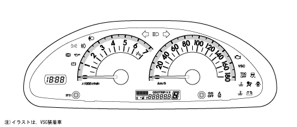
スピードメーター仕様
スピードメーター仕様
表 示
機 能
表示範囲：0～180km/h
10km/h刻み
ステッパーモーター方式。
ABS用車輪速センサーからの矩形波パルス信号を，スキッドコントロールコンピューターを介して入力し，車速を表示。
タコメーター仕様
タコメーター仕様
表 示
機 能
表示範囲：0～7000r/min
500r/min刻み
レッドゾーン：6400～7000r/min
ステッパーモーター方式。
エンジンコントロールコンピューターからの矩形波パルス信号（2パルス/rev）を入力し，エンジン回転数を表示。
フューエルゲージ仕様
フューエルゲージ仕様
表 示
機 能
表示範囲：E～F
フューエル残量約6.8L以下になると，ウォーニング表示
デジタル電子遅延方式。
フューエルセンダーゲージからのフューエルタンク内残量信号とスキッドコントロールコンピューターからの車速信号とを入力し，車両状態に応じた演算処理を行ったデータによりフューエル残量を表示。
オド/トリップメーター仕様
オド/トリップメーター仕様
表 示
機 能
LCDによるデジタル表示
オドメーター表示範囲：0～999999km（1km刻み）
トリップメーターA・B表示範囲：0.0～9999.9km（0.1km刻み）
電子式。
ABS用車輪速センサーからの矩形波パルス信号を，スキッドコントロールコンピューターを介して入力し，積算することで走行距離を表示。
交代距離も加算。
オド/トリップ切り替えスイッチにより，オドメーター→トリップメーターA→トリップメーターB→レオスタットの順に表示。
作動/ウォーニングインジケーターランプ仕様
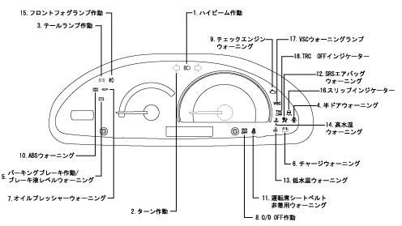
作動/ウォーニングインジケーターランプ一覧
No.
意 匠
名称と表示
機 能
1
ハイビーム作動
LEDによりブルーで表示
ハイビームヘッドランプ点灯時にディマスイッチに連動して点灯。
2
ターンシグナル作動
LEDによりグリーンで表示
ターンシグナルランプ点灯時に，フラッシャーリレーと同期して点灯。
3
テールランプ作動
LEDにより黄緑で表示
テールランプ点灯時にテールランプリレーがONすることにより点灯。
4
半ドアウォーニング
LEDによりレッドで表示
いずれかのドアが開いている場合または半ドア状態の場合に各ドアカーテシランプスイッチがONすることで点灯。
5
パーキングブレーキ作動/ブレーキ液レベルウォーニング/EBDウォーニング
LEDによりレッドで表示
パーキングブレーキ作動中にパーキングブレーキスイッチがONすることにより点灯。
ブレーキ液が少ない（LOWレベル以下）場合にブレーキ液レベルスイッチがONすることにより点灯。
ブレーキシステムに異常が発生した場合にスキッドコントロールコンピューターの制御により点灯。
6
チャージウォーニング
LEDによりレッドで表示
オルタネーターの端子電圧に異常が発生した場合に点灯。
7
オイルプレッシャーウォーニング
LEDによりレッドで表示
油圧が極端に低下した場合にオイルプレッシャースイッチがONすることにより点灯。
8
O/D OFF作動
LEDによりイエローで表示
O/D OFF選択時に，エンジンコントロールコンピューターの制御により点灯。
9
チェックエンジンウォーニング
LEDによりイエローで表示
エンジンコントロールコンピューターなどのエンジン制御システム関係に異常が発生した場合にエンジンコントロールコンピューターの制御により点灯。
10
ABSウォーニング
LEDによりイエローで表示
ABS関係に異常が発生した場合にスキッドコントロールコンピューターの制御により点灯。
11
運転席シートベルト非着用ウォーニング
LEDによりレッドで点滅表示
イグニッションスイッチ ON状態で，運転席のシートベルトを着用していない場合にメーターコンピューターの制御により点滅。
12
SRSエアバッグウォーニング
LEDによりレッドで表示
SRSエアバッグ関係に異常が発生した場合にセンターエアバッグセンサーASSYの制御により点灯。
13
低水温
LEDによりブルーで表示
エンジン冷却液温が約55℃以上（液温上昇時）になるまで，エンジンコントロールコンピューターからの水温信号を入力したメーターコンピューターの制御により点灯。
14
高水温
LEDによりレッドで表示
エンジン冷却液温が異常高温になった場合に，エンジンコントロールコンピューターからの水温信号を入力したメーターコンピューターの制御により点滅（117℃以上）または点灯（120℃以上）。
15
フロントフォグランプ作動
LEDによりグリーンで表示
フロントフォグランプ点灯時にフロントフォグランプリレーがONすることにより点灯。
16.
スリップ
LEDによりイエローで表示
VSC作動時にスキッドコントロールコンピュータの制御により点滅
17.
TRC OFF作動
LEDによりイエローで表示
TRC OFF時にエンジンコントロールコンピュータの制御により点灯
18.
VSCウォーニング
LEDによりイエローで表示
VSC関係に異常が発生した場合にスキッドコントロールコンピューターの制御により点灯
マルチブザー仕様
マルチブザー仕様
項 目
機 能
キー抜き忘れウォーニング
イグニッションキーが差し込んである状態（IG・ACC OFF）で，運転席のドアを開くと約0.5秒周期で吹鳴。
ランプ消し忘れウォーニング
ヘッドランプまたはテールランプが点灯した状態でイグニッションキーが抜いてある場合に，運転席のドアを開くと連続音で吹鳴。
A/Tリバースウォーニング
シフトポジション「R」（リバース）時に，約0.7秒周期で吹鳴。
シートベルト非着用ウォーニング
シートベルトを装着していない状態で一定速度以上の走行を行うと，2段階のパターンで吹鳴。
オーディオシステム概要
オーディオシステム概要
●
オーディオヘッドユニットとして新たに05年度仕様のHDDナビゲーション（CD・MDタイプ）とDVDナビゲーション（CDタイプ）を採用し，それぞれを4スピーカーシステムと組み合わせました。また，これに伴い，従来より採用の“ワイドマルチ AV ステーション”を廃止しました。
オーディオヘッドユニット意匠（追加分のみ）
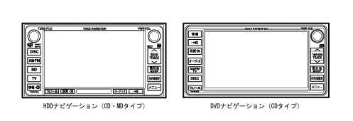
ビジュアルシステム概要
ビジュアルシステム概要
●
ビジュアルシステムとして，6.5型ワイド画面と記憶媒体にHDDを用いたHDDナビゲーション（CD・MDタイプ）と，低コストを実現化したDVDナビゲーション（CDタイプ）の2種類を新たに設定し，ビジュアルシステムバリエーションの充実をはかりました。また，これに伴い，従来より採用の“ワイドマルチ AV ステーション”を廃止しました。
ビジュアルシステム意匠
ビジュアルシステム機能比較
機 能
HDDナビゲーション
DVDナビゲーション
画面サイズ
6.5型ワイド
6.5型ワイド
ナビゲーションコンピューター
内蔵
内蔵
地図データ記憶媒体
HDD
DVD-ROMディスク
Ｇ－ＢＯＯＫ機能
対応
非対応
音声認識操作
対応
非対応
ハンズフリー機能
対応（Bluetoothのみ）
非対応
簡易タイプヘルプネット機能
対応
非対応
通信機能
通信機能
●
Ｇ－ＢＯＯＫ機能をさらに進化させたＧ－ＢＯＯＫ ＡＬＰＨＡを採用し，機能性に優れたものとしました。
●
販売店装着オプション設定の音声認識マイクおよび電話スイッチとBluetooth対応の携帯電話を使用することで，「ハンズフリー通話」・「ヘルプネット」・「Ｇ－ＢＯＯＫ ＡＬＰＨＡ」といった利便性に優れた各機能を使用することができます。
ハンズフリー通話
・
Bluetooth対応の携帯電話を用いて無線のハンズフリー通話が行えるものとしました。
参 考
携帯電話は指定された機種のみが使用できます。
・
発信後または着信後は，音声認識マイクと車両搭載スピーカー（右フロントスピーカー)によって通話を行います。
音声認識マイク（販売店装着オプション設定）
・
音声認識マイクは単一方向性のボックス型マイクとし，フロントパーソナルランプの後部に取り付けました。
音声認識スイッチ・電話スイッチ（販売店装着オプション設定）
・
音声認識スイッチおよび電話スイッチをステアリングパッド右側に配置し，ステアリングホイールから手を放すことなくスイッチ操作が行えるものとしました。
Bluetooth対応携帯電話について
・
Bluetooth（ブルートゥース）とは，電気信号・コンピューター・ネットワーク分野の世界主要メーカーが加入しているBluetooth SIG（Special Interest Group）という団体によって技術の標準化が進められている，2.4GHzの周波数帯を用いた省電力ワイヤレス通信システムです。
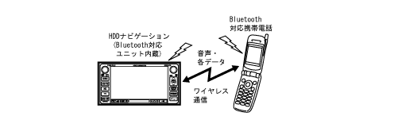
・
本車両では，HDDナビゲーションにBluetooth対応ユニットを内蔵することで，本車両対応のBluetooth対応携帯電話を使用した場合にはハンズフリー通話やヘルプネットを利用することができます。
発信
・
停車中に電話スイッチのオフフックスイッチを押す，またはパネルスイッチの「情報・Ｇ」スイッチを押すことで表示される情報モード画面内の「TEL」をタッチすると，電話番号入力画面に移行し，以下の方法で電話をかけることができます。
電話画面
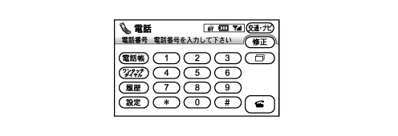
ダイヤル発信の方法
項 目
方 法
ダイヤル発信
電話番号を入力して電話をかける。
電話帳発信
電話帳から電話番号を呼び出して電話をかける。
ワンタッチダイヤル発信
あらかじめ登録しておいた電話番号（ワンタッチダイヤル）を選択して電話をかける。
履歴発信
過去に電話をかけた番号，または過去に電話を受けた番号を呼び出して電話をかける。
参 考
上記の基本発信機能のほか，ナビゲーション画面からの発信（電話番号データを持っているとき），音声認識による発信を可能とし，様々な場面での発信に対応しています。
着信
・
着信すると着信音を鳴らす
*
とともに，着信中画面を表示します。なお，着信音を出力するときは，オーディオ音声・ナビゲーションの案内音声をミュート（消音）します。
参 考
＊
一部の携帯電話では着信音が鳴らないものもあります。
・
着信中画面上の「通話（電話マーク）」をタッチする，または電話スイッチのオフフックスイッチを押すことで，電話を受けることができます。
設定
・
電話番号入力画面の「設定」にタッチすることで，電話設定画面に切り替わり，ハンズフリーに関する各種の設定ができます。
電話設定画面
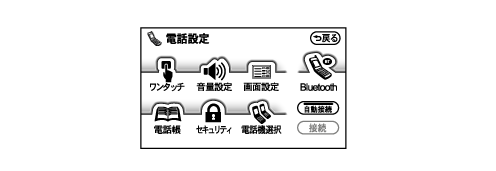
電話設定項目一覧
ワンタッチダイヤル設定
登録
ワンタッチダイヤルへの登録
削除
ワンタッチダイヤルの削除
全削除
ワンタッチダイヤルの内容全消去
音量設定
受話音量
通話中の音量設定
着信音音量
着信音の音量設定
高速走行時の自動音量切り替えON/OFF
高速走行時に自動的に音量を上げる機能ON/OFF
設定の初期化
各設定を初期設定状態にする
画面設定
着信時の画面表示設定（全画面・簡易）
着信画面表示の切替
自動着信応答（する・しない）
自動着信機能ON/OFFとONの場合は時間設定
ACC ON時の接続確認表示（する・しない）
Bluetoothリンクの接続確認表示
設定の初期化
各設定を初期設定状態にする
電話帳設定
電話帳
電話帳転送
電話機からHDDナビゲーションシステムへ電話帳の内容を転送する
新規追加
HDDナビゲーションシステムで新規に電話番号を登録する
修正
既存の電話番号を修正する
削除
電話帳の内容を削除する
全削除
電話帳の内容全部を削除する
グループ
登録
グループ名称を登録する
削除
グループ名称を削除する
全削除
グループ名称を全部削除する
セキュリティー
ロック№変更
セキュリティー用のロックNo.の変更
電話帳・発着履歴発信制限（する・しない）
電話帳や発着信履歴を利用した発信を制限
設定の初期化
各設定を初期設定状態にする
電話機選択
選択
使用する通信機器を選択する
詳細情報表示
携帯電話に関する情報表示と設定
Bluetooth
登録
携帯電話の登録（Bluetooth接続可能状態）
変更
設定情報の表示と設定の変更
削除
Bluetooth電話機の登録を削除する
設定の初期化
各設定を初期設定状態にする
電話帳データの転送・登録
・
携帯電話自体のメモリをハンズフリーシステム側の電話帳に転送し，登録することができます。
・
各情報の転送・登録は，電話設定画面から行います。
Ｇ－ＢＯＯＫ ＡＬＰＨＡシステム
Ｇ－ＢＯＯＫ ＡＬＰＨＡシステム
●
販売店装着オプション設定の音声認識マイク・電話スイッチとBluetooth対応のお客様の携帯電話を使用することにより，Ｇ－ＢＯＯＫネットワークと最新技術の融合による次世代のテレマティクスサービス「Ｇ－ＢＯＯＫ ＡＬＰＨＡ」の利用を可能としました。
●
Ｇ－ＢＯＯＫ ＡＬＰＨＡには緊急通報システムのヘルプネットを標準設定し，交通事故死傷者の低減と交通に関わる二次災害のさらなる防止に寄与するものとしました。
●
暗号化された音楽データをハードディスクに保存・管理するデジタル著作権保護システム（G-DRM：Digital Rights Managemant ）の採用と，Ｇ－ＢＯＯＫ ＡＬＰＨＡの通信システムの組み合わせにより，新しい音楽サービスを車室内で楽しむことができるものとしました。
●
VICSなどの交通情報を利用した道路状況の予測や，渋滞を回避した最適ルートを案内するＧルート探索を新たに採用しました。
システム図
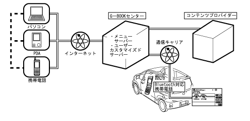
Ｇ－ＢＯＯＫ ＡＬＰＨＡが提供する主なサービス
項 目
代表例
安心・安全
緊急車両の手配など。
ドライビングインテリジェンス
オペレーターサービス・渋滞予測など。
アミューズメント
オンドマンドカーオーディオなど。
ライブナビゲーション
タウン情報・グルメ情報など。
インフォメーション
ニュース・交通情報など。
エンターテイメント
占いのランキングなど。
コミュニケーション
Eメール・位置情報交換など。
セーフティ ＆ セキュリティ
車両メンテナンスの案内・自車位置確認など。
Eコマース
オンラインショッピングなど。
参 考
Ｇ－ＢＯＯＫオンラインサービスを利用するには，利用契約や各種登録などが必要になります。また，サービスによっては個別で料金が必要なものがあります。
車両での情報（コンテンツ）入手について
・
車両でのＧ－ＢＯＯＫ ＡＬＰＨＡの情報（コンテンツ）は，Ｇ－ＢＯＯＫセンターを中心としたＧ－ＢＯＯＫネットワークからBluetooth対応の携帯電話を利用してデータ通信を行うことで入手します。
車両でのコンテンツ入手イメージ図
Ｇ-ＢＯＯＫ各種設定について
・
Ｇ－ＢＯＯＫサービスを利用するために，接続した通信機器（Bluetooth対応のお客様の携帯電話）に合わせた各種設定が必要になります。
・
Ｇ－ＢＯＯＫサービス利用にあたっての各種設定は，設定画面の「Ｇ－ＢＯＯＫ通信設定」をタッチすることで表示されるＧ－ＢＯＯＫ通信設定画面から行います。
ブラウザについて
・
ブラウザは，Ｇ－ＢＯＯＫ．ｃｏｍが提供するＧ－ＢＯＯＫオンラインサービスの各種コンテンツを表示するアプリケーションです。
・
ブラウザ画面では，表示ページ切り替え・ブックマーク登録・コンテンツの読み上げ要求などの操作ができます。またコンテンツ読み上げ時には，読み上げ音量の調整・停止などの操作ができます。
ブラウザ画面
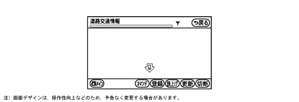
メインメニュー
・
Ｇ－ＢＯＯＫの各機能は，情報モード画面内の「メインメニュー」から移行するＧ－ＢＯＯＫメインメニュー画面で，各項目のタッチスイッチ枠をタッチすることで選択します。
メインメニュー画面
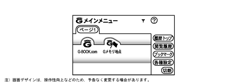
メインメニュー項目一覧
項 目
内 容
Ｇ－ＢＯＯＫ．ｃｏｍ
Ｇ－ＢＯＯＫ．ｃｏｍコンテンツが閲覧・実行できます。
Ｇメモリ地点
Ｇ－ＢＯＯＫ.ｃｏｍで保存した施設を検索・表示できます。
履歴トップ
ブラウザで最後に閲覧したページを表示できます。
閲覧履歴
閲覧履歴画面を表示できます。
ブックマーク
ブックマークリスト画面を表示できます。
各種設定
各種設定画面を表示できます。
切断
Ｇ－ＢＯＯＫセンターとのデータ通信を切断できます。
Ｇ-ＢＯＯＫ.com
・
Ｇ－ＢＯＯＫ．ｃｏｍは，ユーザー独自のメニューフォルダで，あらかじめ設定されている利便性に優れた各コンテンツなどを閲覧・実行できます。
Ｇメニュー
・
Ｇメニューでは，各カテゴリーに分けられた豊富なメニューから，ユーザーの目的や趣味にあったメニューを検索し，実行することができます。
Ｇメニュー設定項目一覧
カテゴリー
主な内容
安心・安全
緊急通報システム「ヘルプネット」のサービスが利用できます。
ドライビングインテリジェンス
道路状況を予測し渋滞を回避した最適なルートを探索することができます。
アミューズメント
さまざまなジャンルの音楽データを車室内で手軽に楽しむことができます。
ライブナビゲーション
タウン情報・旅行情報・グルメ情報などのトレンドスポットを検索することができます。
インフォメーション
スポーツ・芸能・経済・ニュース・天気・株価など今必要な情報を検索することができます。
エンターテイメント
ゲーム・占い・音楽のヒットランキングなど毎日を楽しむための情報を検索することができます。
コミュニケーション
Eメールや位置情報の交換などコミュニケーション用コンテンツを使用することができます。
セーフティ ＆ セキュリティ
車両の現在地を確認するコンテンツなどを使用することができます。
Eコマース
オンラインショッピングを楽しむことができます。
参 考
メニュー構成およびそれらの内容は操作性向上のため，予告なく変更する場合があります。
Ｇメモリ地点
・
Ｇ－ＢＯＯＫ．ｃｏｍで保存した施設などをリスト表示することができます。
・
登録したＧメモリ地点は，ナビゲーションモードのメモリ地点から呼び出して，目的地として設定することもできます。
閲覧履歴
・
ブラウザで閲覧したコンテンツのタイトルを日付けの新しい順に保存することにより，以前利用したコンテンツを再度閲覧したい場合に検索し易くなります。
ブックマーク
・
ブラウザで表示しているページをブックマークとして登録することにより，再度閲覧したいページがある場合にはブックマーク画面から簡単に表示することができます。
・
登録したブックマークのタイトルは，好みに合わせて編集（変更）することもできます。
音声認識コマンド
・
MyリクエストやＧ－ＢＯＯＫ．ｃｏｍなど一部のコマンドを音声操作で行うことができます。
Myリクエスト
・
よく利用するサービスをあらかじめ登録し簡単な操作でコンテンツをリクエストすると，情報を音声で読み上げることができます。
・
Myリクエストからリクエストしたコンテンツは，ナビゲーションモードの現在地表示中でも内容を音声で読み上げます。
・
音声認識でリクエストを行うとナビゲーションモードの地図画面から，走行中でもリクエスト可能なコンテンツのリスト画面を表示することができます。
ヘルプネットシステム
・
緊急通報システムのヘルプネットを標準設定することにより，交通事故死傷者の低減と交通に関わる二次災害の防止に寄与するものとしました。
・
ヘルプネットシステムは運転時における事故や急病などのトラブル発生時に，Bluetooth対応の携帯電話から公衆回線網を用いて音声とともにお客様の位置情報をヘルプネットオペレーションセンターに送信することで，ヘルプネットオペレーションセンターが必要に応じた緊急通報機関（警察・消防）に回線を接続してくれるサービスで，救命措置までの時間を短縮することにより，交通事故死傷者の低減や交通にかかわる二次災害の防止に寄与します。
システム図
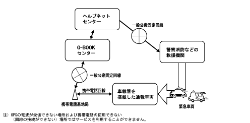
初めて使う場合の準備
・
初めてヘルプネットシステムを利用するためには，あらかじめＧ－ＢＯＯＫオンラインサービス利用申し込みとオプション利用手続きが必要となります。
サービス開始操作（手動保守点検）
・
ヘルプネットセンターとの通信テスト・ヘルプネットセンターに会員登録されているかどうかの確認およびシステムの機器点検を手動で行うことができます。
手動保守点検の手順一覧
順 序
内 容
1
ナビゲーション画面で，GPSの受信を確認し，パネルスイッチの「情報・Ｇ」スイッチを押した後，情報画面内の「設定」をタッチします。
2
設定画面内の「保守点検」を約10秒間タッチし続けます。
3
ヘルプネットセンターに接続を開始します。
4
ヘルプネットセンターに接続されると，最初に車両の現在位置，手動保守点検であることやヘルプネットセンターに会員登録されているか否かをデータ通信により確認します。
5
データ通信の完了後通話モードになり，会員登録済みであればマイクを通してヘルプネットセンターと通話することができます。
6
会話の終了によりすべての点検が終了します。情報画面で「ヘルプネット」スイッチが表示されます。
通報の手段
・
パネルスイッチの「情報・Ｇ」スイッチを押し，表示される情報モード画面内の「ヘルプネット」をタッチすることで通報を行います。
情報モード画面
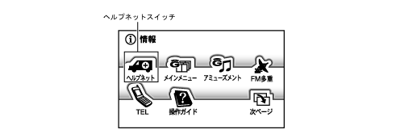
通報の手順
・
通報の手順は下記のようになっています。
緊急通報の手順概要一覧
順 序
システムの状態（「」内はアナウンス音声）
お客様の状態
ヘルプネットセンター/救援機関
1
緊急通報可能状態
通報開始
－
2
ヘルプネットセンター呼び出し中：「緊急通報を開始しました。ヘルプネットに接続しています。」
－
－
3
通報データ送信中：「データ送信中です。しばらくお待ちください。」
緊急通報発生および車両位置などのデータをヘルプネットセンターに送信
お客様からのデータを受信
4
「ヘルプネットのオペレーターと会話を開始します。」の後，ヘルプネットセンターのオペレーターと会話
ヘルプネットセンターのオペレーターに状況を報告
オペレーターが状況を確認
5
緊急通報完了：「緊急通報を終了しました。これより着信した場合は自動的に通話を開始します。」
－
オペレーターが救援機関に対して出動要請を行う
6
自動着信待ち状態
待機
救援機関出動
7
－
－
救援機関が通報現場に到着し，救護
以下のような場合には緊急通報サービスが利用できない，または緊急通報サービスの質が低下することがあります。
・
Ｇ－ＢＯＯＫサービス契約の不成立時または消滅時，入会後サービス開始操作未実施時。
・
ヘルプネット対応機器または車両関連機器の異常による通信不能時。
・
センターの位置評定エラー時。
・
センターシステムの異常による通信不能時。
・
緊急通報システムで利用する通信網に起因する通信不能時。
・
緊急通報事業者の都合によるサービス提供の中断または休止時。
注意事項
・
電波状態によっては緊急通報および通話することができません。
・
携帯電話サービスエリア外では，緊急通報動作が開始しても緊急通報できません。緊急通報できなかった場合には，最寄りの公衆電話などから通報してください。
・
車両衝突時，通信に必要な機器に異常または損傷が生じた場合は，緊急通報および通話ができないことがあります。
・
バッテリーの電圧低下または，バッテリーとの接続が断たれた場合には緊急通報できない場合があります。
・
緊急通報後に救援を待つ間は，センターとの会話が可能で安全な場所に避難してください。
・
ボタン操作による緊急通報は安全な場所に停車して行ってください。
・
すべての通信料金は，お客様の負担となります。（携帯電話利用の場合）
・
発信または着信を制限する機能（ダイヤルロック等）は緊急通報の妨げとなりますので利用しないでください。なお，使用している電話機または通信事業者によって緊急通報の妨げとなる機能が異なります。（携帯電話利用の場合）
Ｇ-ＢＯＯＫとナビゲーションとの連携機能
機能概要
・
ナビゲーションとＧ－ＢＯＯＫオンラインサービスを連携させることにより，渋滞などの道路状況をリアルタイムに提供します。主な機能としてＧルート探索や渋滞予測などがあります。
Ｇルート探索
・
VICSによる最新の道路交通情報と過去の統計データから総合的に今後の道路状況を予測し，渋滞を回避した最適なルートを探索し案内します。
渋滞予測
・
Ｇ－ＢＯＯＫセンターからの渋滞予測情報をもとに渋滞予測時間や渋滞増減予測などを表示します。
渋滞予測サービス
サービス名
サービス内容
エリアチェック
現在地周辺における高速道路の最新道路交通情報と90分後までの道路状況を予測し，今後の渋滞状況をナビゲーション画面に分かりやすい簡易地図で表示するとともに，音声案内を行います。
ルートチェック
目的地までのルート上にある高速道路の最新道路交通情報と90分後までの道路状況を予測し，ナビゲーション画面に分かりやすい簡易地図で表示するとともに，音声案内を行います。
所要時間チェック
高速道路のサービスエリアで休憩（30分または60分）をとった場合の次の高速出口までの所要時間を，渋滞予測をもとにシミュレーションし，休憩時間別に走行時間の違いを分かりやすく表示します。
アミューズメント
機能概要
・
車両出荷時に，さまざまなジャンルの音楽データを10000曲以上暗号化してHDDナビゲーションシステムにプリインストールしてあります。聴きたい曲やコースを選んで，暗号を解除するライセンスキーをＧ－ＢＯＯＫセンターからオンラインで購入することにより，車室内で手軽に音楽を楽しむことができます。
・
ナビゲーションシステムのハードディスク化にともなって，暗号化された音楽データをハードディスクに保存・管理するデジタル著作権保護システム（G-DRM：Digital Rights Managemant ）を組み込むことにより，著作権管理と保護の徹底を行いました。
・
車室内で楽しむことができるアミューズメントとしてG-SOUNDやAUTOLIVEを採用しました。
・
パネルスイッチの「情報・Ｇ」スイッチを押し，表示される情報モード画面内の「アミューズメント」をタッチすることでアミューズメントメニュー画面を表示します。
アミューズメントメニュー画面
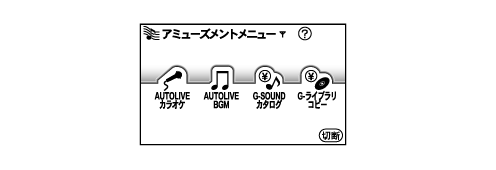
G-SOUND
・
J-POPや演歌・ジャズ・クラシックまで，さまざまな音楽が購入できます。なお，音楽データの追加更新はメンテナンスCD（Ｇライブラリディスク
*
）により行うことができます。
参 考
＊
最新のJ-POP，歌謡曲，Jazz/Classic，Pops/Rockなどの音楽をジャンルやテーマ別に約100曲ずつセレクトし，音楽データを暗号化して収録したCD-ROM。
AUTOLIVE
・
利用したいカラオケやBGMを毎月定額のお支払いで，歌い放題，聴き放題で利用できます。また，チケット
*
により曲またはチャンネル毎にご購入頂くダウンロードコースもあります。
参 考
＊
ダウンロードコースは，先にチケットをご購入頂く必要があります。